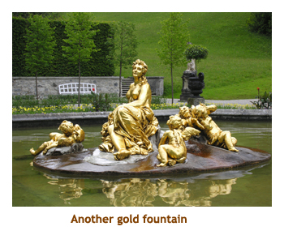
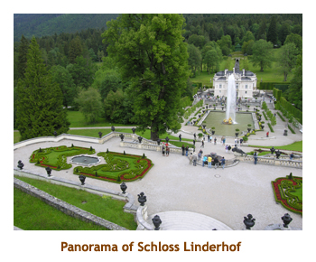
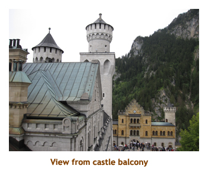

[ Home ] [ Travel ] [ Photography ] [ Pets ] [ Games] [ Rowing] [ Physics ]


Cruising on the River Beatrice
Travel
Cruises
Past Cruises (Diaries)
Future Cruises
Rogues Galleries
Land Trips
Diaries (Land Trips)
Hawai'i - Big Island - 04'01
Hawai'i - Maui - 05'02
Hawai'i - Big Island - 04'03
Hawai'i - Kaua'i - 09'04
Hawai'i - Big Island - 04'06
Hawai'i - Maui - 04'06
Mainland China - 05'07
Phoenix, Arizona - 12'07
Greek Isles - 05'08
Hawai'i - Kaua'i - 09'08
Hawai'i - Big Island - 09'09
Hawai'i - Maui - 05'12
Hawai'i - Big Island - 04'13
Ireland - 08'13
Mexico - Cancun 11'13
France/Belgium/Lux 07'15
Hawai'i - Big Island - 05'17
England / Wales - 06'17
Hawai'i - Big Island - 09'19
Photography
Cameras
Underwater
Pets
Tara
Blackie
Whitey
Muffy
Ollie
Rusty
Fluffy
Rufus&Dufus
Games
Rowing
Physics
Rating (out of 5):
Ship  Food
Service
Itinerary
Food
Service
Itinerary
This diary covers the second river cruise that we did approximately one week after the Rhine/Main River cruise. This cruise was 7 days long and took us from Passau (Germany) to Budapest (Hungary). Prior to this cruise we stayed 4 days in Munich, and I have added the details of our Munich stay into this diary.
The first cruise we did was on one of Uniworld's oldest ships - the River Ambassador.
This cruise was on one of the newest - the River Beatrice. Although the Ambassador
was very nice, we liked the Beatrice even better; bigger staterooms, a laundry facility,
a separate libray/internet room, a second "Captain's Club" lounge and everything was just
a bit newer. The food and service were equally good on both ships.
Pre-cruise (Jun 22 - 25) - A visit to Munich
June 22 - Continuing along from our previous cruise diary, we
had boarded the train from Prague to Munich. The 6 hour trip was very
interesting, travelling through the countryside of the Czech Republic
(C.R.) and Germany, passing some quaint towns and villages. We were in
a cabin for 4 and our travel mate was a young German man who was a medical
student at a Prague University. His English was excellent and he told
us a lot about living in both Germany and the C.R. We arrived in Munich
mid-afternoon. We exited the train and went outside of the train station
(Munchen Hauptbahnhof or Hbf for short) to catch the tram to our hotel.
The Hotel Laimer Hof was well out of the downtown area, and just next
to the Schloss Nymphenburg complex. We got off the tram at Romanplatz
and walked a few short blocks to the hotel. We had booked here based on
a #1 score from TripAdvisor. We could only get 2 nights because they were
full for a wedding on the weekend. The hotel was a bit of a disappointment
as it was very old and far from anywhere interesting (Schloss Nymphenburg
aside). As we were signing in to the hotel, we met one of the passengers
from our Rhine cruise (Harriet). We decided to do dinner together, as
her travel mate (Chris) was down with the flu or a cold. It was cloudy
but warm out, so we walked to a beer garden called the Hirschgarten Brauhaus.
It was mainly outdoors and sat about 5,000 people. We had schnitzel with
yellow mushrooms, spaetzle and a beer. Just as we finished our dinner black clouds
rolled in and we we treated to thunder, lightening and torrential rains.
Waiters were running around collapsing umbrellas and moving people indoors.
By the time we had walked the 5 blocks back to our hotel we were soaked.
So ended our first day.
June 23 - On our second day in Munich we awoke to a cloudy day with scattered showers. Breakfast was provided by the hotel and the selection of food was quite good. We had decided to go to the BMW auto museum. We hiked to Romanplatz and hopped on the bus, getting off after about 15 minutes at Moosach. There we transferred to the underground to a stop near the Olympic Park. It was a short walk to the museum. The BMW display was awesome. We did two different buildings and saw engines, bikes and cars from every era. We even saw a guy in a racing uniform and helmet who rode a motorbike around the lobby and up and down stairs. The museum was featuring a temporary exhibit of "art cars" which were basically BMW's that famous people had hand painted. It was amazing. Today was a stat holiday in Bavaria so we couldn't visit the BMW factory which was closed. After seeing all of the museum, we hopped on the underground and headed to the Marienplatz in the "old town". There we hunted down the Weisses Brauhaus that Mike and Stacy liked so much. We had schnitzel and beer. Yummy! It was raining so we quickly toured the old town (very crowded) and then did the underground and tram back to the hotel. At the Romanplatz, we stopped at a grocery store (Rewe) to pick up snacks for dinner. We spent the rest of the day visiting Schloss Nymphenburg which was just a couple of blocks from our hotel. It was grey and cloudy, so not very good for pictures.
By fluke, another couple of Rhine cruise passengers, Mike and Susan
from Burnaby, were coming to
Munich and had emailed us to visit them at their hotel. Their hotel was only two blocks
from the Hotel Laimer Hof! So, after a snack for dinner, we walked over to M&S's hotel.
We had a nice visit with them and helped them to finish up some wine. What a coincidence
meeting 4 of our previous cruise buddies in Munich!!
 |
June 24 - This was a "transfer" day as we had to change to another hotel for the
next two nights. We were moving to the Art Hotel where Mike and Stacy had stayed. Once
again we had a nice buffet breakfast in the hotel. It was a
sunny morning, so we decided to give Schloss Nymphenburg another try. It was much nicer
in the sunshine. This palace was one of several belonging to King Ludwig II ("Mad Ludwig").
We wandered the palace gardens for a while and then went back to the hotel to check out.
We took the tram to the Hbf and walked a few blocks to the Art Hotel. After checking in
we walked to the underground and subbed to Marienplatz. We strolled around the old town
and ended up at the Weisses Brauhaus again. So we ate. After some more touring of the town we
subbed back to the Hbf and checked out the Gray Line bus depot to see where our
bus tour was departing from the next day. Back at the hotel we snacked on our dinner and
read for a while.

June 25 - Today was our special
Gray Line Tours trip to Oberammergau and two of Ludwig's castles,
Linderhof and Neuschwanstein. We had booked this tour before leaving Calgary.
We were up early, had breakfast in the hotel restaurant (breaky was included),
and then hustled over to the Gray Line stop just
outside of the Hbf. Our tour was at 8:30 and we were a bit early. While
waiting for our bus we were mingled with folks for a different Gray Line tour.
There, in front of us, were 6 more people from our Rhine cruise! How in the heck
could 12 of us from the cruise (of only 110 people) all end up in Munich - miles
from Prague where the cruise/tour had ended? We said "Hi" and heard all about our
tour, as the group of 6 had done that tour the day before.
It was a cloudy (but dry) day. Our bus arrived soon
and we were on our way.
|  |  |
We headed south out of Munich heading for the
mountains. About an hour later we
hit Linderhof. We visited the palace of the same name.
This was bought and refurbished by Ludwig II. It was small, but had a beautiful
interior and extensive gardens. After about an hour to wander about, we headed
off to Oberammergau - the home of the Passion Play (every 10 years). The last
play was in 2010, so the next show wouldn't be until 2020. We had to content
ourselves walking through the village and looking at the beautifully painted
Alpine houses. Marj bought a little garden ornament in one of the many souvenir
shops. Finally it was off to Neuschwanstein - that famous castle in the mountains
that appears in every brochure or calendar from Bavaria. This castle was never
finished - Ludwig was "dethroned" during construction. We arrived at the base of
the mountain and had lunch in a local restaurant. Then we walked up a long hill
to the castle. There were loads of
people there so we had to wait about an hour until our "tour time" came up.
We toured through the finished rooms and the grounds. Then it was back in the bus
for our 1.5 hour drive back to Munich. We arrived back about 5:00 PM. We
returned to the hotel and had a snack for dinner. We did some packing
in preparation for checking out the next day and heading to the
river cruise ship.
|  |
Day 1 (Jun 26) - Boarding in Passau
We woke up early today to sunshine. Breakfast at the hotel was good - lots of choice in the buffet. We checked out and then dragged our luggage to the subway and headed out to the airport. Yes, airport! We had purchased a Uniworld bus transfer from the Munich airport to the ship (in Passau) so had to get to the airport by 9:00 AM. Uniworld is like Celebrity in that you must be flying in that day to qualify for a transfer. We did the same trick as we had done previously with Celebrity and gave them the number of an arbitrary flight that was to arrive today at about 9:00 AM. We met the Uniworld girl at the baggage claim area and checked in with her. Our "fake" flight had not landed yet which confused her as she couldn't find the other Uniworld passengers that were on the same flight. Anyway, we had about an hour wait for the other passengers to arrive (from other flights too) and we boarded the bus for the 1.5 hour drive to Passau.
We arrived in Passau about 1:00 PM and were checked into the ship about 1:30. Our
rooms weren't ready until 2:00, so we had some lunch in the lounge area. Then we
headed to our room where our luggage had been delivered. We unpacked everything
and found plenty of cupboard space. The ship was docked right in the heart of the
"old town" area so we did a walk through the town. The safety talk and port lecture
was at 6:00 and dinner at 7:00. For dinner I had English style roast beef.
Day 2 (Jun 27) - Touring in Passau
We woke up to a beautiful sunny day. The ship had not moved since we boarded yesterday,
so we were still in Passau. Passau is situated at the confuence of three rivers - the
Danube, the Inn and the Ilz. The rivers were different colours and we could see all three
from where we were docked. We had breakfast at 7:00 and then headed off on a walking tour
at 9:30. The tour took us around the old part of the city. We stopped at a huge Cathedral
(St. Stephan) and were treated to an organ concert with pieces by Bach, Tartini and others.
It was wonderful. We finished the tour back at the ship by noon, just in time for a Bavarian
lunch buffet. We popped back into Passau for a few photos and then reboarded as the ship
left for Linz at 3:00. We enjoyed the river from the upper deck as we sailed by farms and
villages. At 6:15 there was a captain's welcome and a port talk. Dinner was a 7:00 and I
had roasted veal tenderloin with gremolata. At 9:00 a local group "The Danube Minstrels"
(2 guys on accordian and guitar) serenaded us for an hour. They were very good. We
arrived in Linz at 10:00 PM and the city was lit up in the dark. One building across from
our dock changed colours with "moving" lights. Bed time.
Day 3 (Jun 28) - A Day in Linz and Salzburg
Another hot sunny day today. We were up for the 7:00 AM breakfast buffet and then headed
off on our all day tour to Salzburg at 8:30. (Salzburg is not on the Danube river, and is a 2
hour drive from Linz.) Our bus did a pit stop about an hour into the tour at a small lake. We
wandered around the service station area and got some good views of the lake (Mondsee -
one of the Salzkammergut Lakes) and the nearby mountains. There was a tiny church near the
service center, but I can't remember it's significance. Back aboard the bus we continued
our drive to Salzburg. Upon arriving in Salzburg we
stopped at the Schloss Mirabell and wandered through the beautiful gardens. We didn't go inside
the palace.
Then we did a walking tour through the old part of Salzburg. The highlights were the Residenz
(home of the Prince Bishop) and the Salzburg Dom. We also saw the apartments where Mozart was born.
Throughout the old town were boutiques, restaurants and other interesting shops. Marj bought
some Mozartkugel chocolates. After the guided tour we were given a couple of hours to have lunch
and shop. We found an outdoor restaurant (SternBrau - Star Brew) with some shaded tables.
After lunch we wandered around the old town taking photos of the old buildings - some from
the 1400's. About 3:00 we boarded the bus for the drive back to Linz. We arrived back at
the ship about 5:00. We had a bit of spare time so we hiked across a bridge (over the Danube)
and found a grocery store. I got some animal crackers and Marjorie got some peanuts and juices.
Back to the ship. We went to the port talk and then it was time for dinner. I had the
roasted rack of lamb. Afterwards we had a local band, the "New Ohr Linz Dixie Band", for some
lively music. It was a wonderful day!
Day 4 (Jun 29) - A day in Melk and Durnstein
Today we woke up to another hot sunny day. We would be touring two different towns today as we continued along the Danube river. Breakfast was at 7:00 and we arrived in the town of Melk at 8:00. We watched the docking and then got ready for our 9:15 tour. The most famous landmark in Melk is Melk Abbey, originally Babenberg Castle which was converted into an abbey in the 1100's. The abbey was perhaps a mile or so from the ship, so we were taken by bus to the abbey. We toured through some of the rooms of the abbey including an amazing library with over 80,000 Medieval transcripts. Then we toured through the cathedral which had ornate Baroque ceilings.
Afterwards we were given some free time to explore the surrounding village of Melk. It
was a typical small Austrian town with quaint buildings and shops. We had the option
of taking the bus back or walking from the village to the boat dock, so we walked.
 |

We were back on the ship in time for lunch. They had a special burger BBQ up on the upper deck. During lunch the ship set sail for Durnstein. It was a gorgeous blue sky day so we all sat in the comfy lounge chairs and watched the scenery roll by. This area of the Danube is called the Wachau Valley and, like the Rhine Valley, is characterized by vinyards and villages. Gorgeous! We arrived at Durnstein at 2:30. We hustled off the ship for our tour. The first part of the tour was a short mini-train ride to a vinyard and winery (Domain Wachau). The main building (the Kellerschlossel) was built in the 1700's. We toured the underground cellars and tasted some of their wines. We hopped back on the mini-train and were taken to the ship. We immediately walked along the riverbank and into the village of Durnstein. It was a delightful little town with a beautiful church. We were back to the ship by 6:00 PM, in time for a local historian to give a lecture on "Sissy" the popular Austrian Empress of the 1800's. The lecturer, an energetic lady, was dressed in a period costume dress and did the lecture in the first person. Her style of presentation was wonderful and we learnt about this interesting Empress.
Extraneous Note: It's interesting that, as you travel the world, seemingly unrelated places seem to come together. When we were in Corfu last year, we toured a palace that belonged to an Austrian Empress. During the lecture, we learnt that Sissy had a palace in Corfu. Click! It all comes together!
At 7:00 we had our regular port lecture and then dinner was right after. I had
the roasted duck breast. There was no special entertainment tonight, so we did an
early evening. At 2:00 AM, the ship left for Vienna. We didn't get up for the sail-away!
Day 5 (Jun 30) - Travelling to Vienna
As we got up, we were still sailing towards Vienna. It was a bit cloudy,
but generally warm and sunny. We did breakfast at 7:00 and the ship finally
arrived at 8:00. We were docked on the outskits of town, so our 9:30 tour
began with a bus into town. We started our walking tour at the Austrian
National Library. We went inside and upstairs into a huge library with
beautiful frescoes on the ceiling. Just a we were finishing our tour,
the fire alarm went off (loud!!) and we had to evacuate the building.
Good job we had just finished. Then we continued our walk passing the
Spanische Reitschule (Spanish Riding School - home of the Lipizzaner Stallions).
We then crossed Michaeler Platz to St. Michael's Church. Passing the Cabbage
Market and the Plague Column we finally came to St. Stephen's Cathedral (Dom).
Our tour ended and we had free time, so we took an elevator up to an observation
platform on the Dom. It was a bit scary with an open metal grating underfoot,
but the view was awesome.

After our free time, we boarded the bus and returned to the ship. We were back by 1:00 PM in time for a late lunch. For the afternoon we walked a short distance from the ship to the church of St. Francis of Assisi (also known as the Jubilee Church) which is near the Mexikoplatz. It was a beautiful church inside with lovely frescoes on the ceiling. Outside, the surrounding shops were all Mexican as was the local neighbourhood. We were really surprised to see an ethnic neighbourhood in Vienna, we tend to think that only happens in North America. The wind whipped up and we had some rain.
Back on the ship we were served an early dinner
(5:30 PM) as we had to leave for our evening concert at 7:15. (I had
"original Wiener Schnitzel"). We drove to the
Wiener Hofburg where we were treated to some lovely classical music -
with a large orchestra
and several soloists. They played some Strauss of course, but also some Beethoven and
Mozart. Very nice! The large concert hall was packed with people
as several river boats were in town and there
were groups from each ship. Driving back to the ship we travelled along the
famous Ringstrasse where all of the buildings were lit up. We arrived back at
almost 11:00 PM, so it had been a full day. In retrospect we realized that
Vienna is a huge city and we had really only seen a fraction of what it had to offer.
We'll have to come back again to really see it in detail.
Day 6 (Jul 1) - Vienna, Bratislava
The following morning we were still docked in Vienna. We would not be leaving until 1:00.
We had booked the optional morning tour to Schonbrunn Palace. So it was breakfast and then
onto the bus for our 9:00 AM adventure. It was another beautiful blue sky day. We drove
through the city and eventually came to the palace. It was huge! The palace was started
by king Leopold, and then completed by Maria Theresa. Our first part of the tour
was inside the palace, where we saw room after room of gold mirrors and elegant furniture.
Then we exitied to the rear of the palace to the gardens and fountain. The center section
was one huge formal garden (called the Great Parterre),
and there were many smaller gardens fenced with rows of trees
off to either side. We walked to the "Sun Fountain" and then up the hill to the "Gloriette"
where the palace was originally destined to be. Then we had to hike back to the main gardens,
go around the palace and across the front courtyard to wait for the bus. What a huge complex!
The bus took us on a bit of a city tour on the way back to the ship. We were back about 12:30.
While we were eating lunch, the ship pulled up anchor (do they really
anchor?) and we set sail for Budapest (even though we didn't have sails).Our
afternoon was spent in the sunshine on the upper deck as we cruised along
the Danube. Once we left Vienna, the Danube shortly leaves Austria and
takes a jaunt into Slovakia. With both countries being in the EU, there
was no visible border as we crossed into Slovakia. We passed some small
villages and then arrived at Bratislava - the capital of Slovakia (about
5:00 PM). Our cruise did not stop there so we had to content ourselves
with views of the city from the ship. Someday we'll have to return as
the city looked very interesting. Passing on from Bratislava, the river
veered southerly where it became the border between Slovakia and Hungary.
There was a disembarkation talk and port lecture followed by dinner at
7:00. I had the sauteed chicken breast. At 9:00 we passed through the
Gabcikovo Lock (about 20 meters or 60 feet high). It has a very interesting
and controversial history.
Day 7 (Jul 2) - A day in Budapest
Today we woke up to mixed sun and cloud, with some rain in the forecast. It was a bit dull for
photos, but we had more than our share of sunny weather in the previous few days. We had
breakfast and then headed to the upper deck to see us sail into Budapest at 8:00. Docking
was at 8:30. We grabbed our stuff and joined the bus for a 9:00 AM tour of the city. We drove
across the famous Chain Bridge and through the city to Hero's Square. In the center of the
square was the very recent Millenial Monument. From there we drove by the Great Synagogue
and the Jewish quarter. We also passed the National Museum, the State Opera House and the
amazing Parliament building. Then we re-crossed the river on the Margaret Bridge and drove
up to Castle Hill. Castle Hill once had over 170 buildings dating back to the 13th and 14th centuries.
Today it is a UNESCO World Heritage Site.
We went insided the huge St. Matthias Church
that had beautifully decorated walls and ceilings. Then we went outside to a small
square and climbed onto the Fisherman's Bastion for a view of the city and river below.
After that we were given about 45 minutes to wander on our own.
We ended up in another small square
(near our bus pickup) where a military band was giving an outdoor concert. Then it was back
on the bus for the drive back to the ship. We arrived at 12:30 and had lunch. After lunch
we walked across the Elizabeth Bridge to Vaci Street - the main shopping concourse in town.
As we walked down the street the clouds darkened and we had a rain storm. We ducked
into a nearby shop and the rain soon stopped. We returned to the ship via the Chain Bridge.
We were back on board by 4:30 for the talk on Budapest. At 6:00 there was a Hungarian folklore
and operetta with "Melody Group" from Budapest. At 7:00 it was our final dinner time and I
had a Hungarian goulash dish. Then it was time to pack our stuff and put our bags out for our
early morning departure.
Day 8 (Jul 3) - Homeward bound

Did I say early morning? Our flight was at 6:15 AM, which meant we had to be at the airport by 4:15, which meant that we had to have a taxi pickup at 3:30. So, we got up at 3:15 and had a quick bite in the lounge. Then it was off to the airport in the morning darkness. Budapest looked quite different in the darkness. Of course we were driving through the modern part of the city - not necessarily so nice as the "old town".
Our flight was ontime and we did the first leg to London Heathrow. At Heathrow we had a 4 hour layover. We filled in the time by going through customs and security, and having a meal at a deli. Then it was off to Calgary. Mike and Stacy were there to pick us up at about 2:00 PM. We got home to find everything OK and the cats just fine. Heather had done a great job.
Now we would be home
for 3 weeks until our next cruise to the Arctic Circle and beyond. But that's another story!